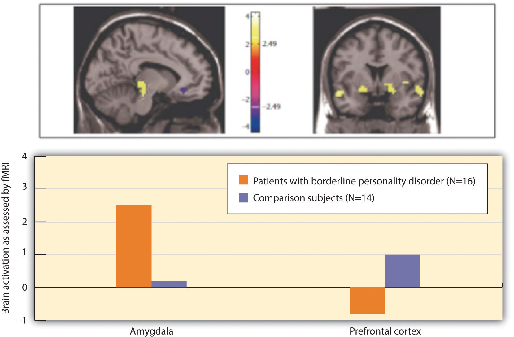

To this point in the chapter we have considered the psychological disorders that fall on Axis I of the Diagnostic and Statistical Manual of Mental Disorders (DSM) categorization system. In comparison to the Axis I disorders, which may frequently be severe and dysfunctional and are often brought on by stress, the disorders that fall on Axis II are longer-term disorders that are less likely to be severely incapacitating. Axis II consists primarily of personality disorders. A personality disorderA condition characterized by inflexible patterns of thinking, feeling, or relating to others that causes problems in personal, social, and work situations. is a disorder characterized by inflexible patterns of thinking, feeling, or relating to others that cause problems in personal, social, and work situations. Personality disorders tend to emerge during late childhood or adolescence and usually continue throughout adulthood (Widiger, 2006).Widiger, T.A. (2006). Understanding personality disorders. In S. K. Huprich (Ed.), Rorschach assessment to the personality disorders. The LEA series in personality and clinical psychology (pp. 3–25). Mahwah, NJ: Lawrence Erlbaum Associates. The disorders can be problematic for the people who have them, but they are less likely to bring people to a therapist for treatment than are Axis I disorders.
The personality disorders are summarized in Table 12.6 "Descriptions of the Personality Disorders (Axis II)". They are categorized into three types: those characterized by odd or eccentric behavior, those characterized by dramatic or erratic behavior, and those characterized by anxious or inhibited behavior. As you consider the personality types described in Table 12.6 "Descriptions of the Personality Disorders (Axis II)", I’m sure you’ll think of people that you know who have each of these traits, at least to some degree. Probably you know someone who seems a bit suspicious and paranoid, who feels that other people are always “ganging up on him,” and who really doesn’t trust other people very much. Perhaps you know someone who fits the bill of being overly dramatic—the “drama queen” who is always raising a stir and whose emotions seem to turn everything into a big deal. Or you might have a friend who is overly dependent on others and can’t seem to get a life of her own.
The personality traits that make up the personality disorders are common—we see them in the people whom we interact with every day—yet they may become problematic when they are rigid, overused, or interfere with everyday behavior (Lynam & Widiger, 2001).Lynam, D., & Widiger, T. (2001). Using the five-factor model to represent the DSM-IV personality disorders: An expert consensus approach. Journal of Abnormal Psychology, 110(3), 401–412. What is perhaps common to all the disorders is the person’s inability to accurately understand and be sensitive to the motives and needs of the people around them.
Table 12.6 Descriptions of the Personality Disorders (Axis II)
| Cluster | Personality disorder | Characteristics |
|---|---|---|
| A. Odd/eccentric | Schizotypal | Peculiar or eccentric manners of speaking or dressing. Strange beliefs. “Magical thinking” such as belief in ESP or telepathy. Difficulty forming relationships. May react oddly in conversation, not respond, or talk to self. Speech elaborate or difficult to follow. (Possibly a mild form of schizophrenia.) |
| Paranoid | Distrust in others, suspicion that people have sinister motives. Apt to challenge the loyalties of friends and read hostile intentions into others’ actions. Prone to anger and aggressive outbursts but otherwise emotionally cold. Often jealous, guarded, secretive, overly serious. | |
| Schizoid | Extreme introversion and withdrawal from relationships. Prefers to be alone, little interest in others. Humorless, distant, often absorbed with own thoughts and feelings, a daydreamer. Fearful of closeness, with poor social skills, often seen as a “loner.” | |
| B. Dramatic/erratic | Antisocial | Impoverished moral sense or “conscience.” History of deception, crime, legal problems, impulsive and aggressive or violent behavior. Little emotional empathy or remorse for hurting others. Manipulative, careless, callous. At high risk for substance abuse and alcoholism. |
| Borderline | Unstable moods and intense, stormy personal relationships. Frequent mood changes and anger, unpredictable impulses. Self-mutilation or suicidal threats or gestures to get attention or manipulate others. Self-image fluctuation and a tendency to see others as “all good” or “all bad.” | |
| Histrionic | Constant attention seeking. Grandiose language, provocative dress, exaggerated illnesses, all to gain attention. Believes that everyone loves him. Emotional, lively, overly dramatic, enthusiastic, and excessively flirtatious. | |
| Narcissistic | Inflated sense of self-importance, absorbed by fantasies of self and success. Exaggerates own achievement, assumes others will recognize they are superior. Good first impressions but poor longer-term relationships. Exploitative of others. | |
| C. Anxious/inhibited | Avoidant | Socially anxious and uncomfortable unless he or she is confident of being liked. In contrast with schizoid person, yearns for social contact. Fears criticism and worries about being embarrassed in front of others. Avoids social situations due to fear of rejection. |
| Dependent | Submissive, dependent, requiring excessive approval, reassurance, and advice. Clings to people and fears losing them. Lacking self-confidence. Uncomfortable when alone. May be devastated by end of close relationship or suicidal if breakup is threatened. | |
| Obsessive-compulsive | Conscientious, orderly, perfectionist. Excessive need to do everything “right.” Inflexibly high standards and caution can interfere with his or her productivity. Fear of errors can make this person strict and controlling. Poor expression of emotions. (Not the same as obsessive-compulsive disorder.) |
Source: American Psychiatric Association. (2000). Diagnostic and statistical manual of mental disorders (4th ed., text rev.). Washington, DC: Author.
The personality disorders create a bit of a problem for diagnosis. For one, it is frequently difficult for the clinician to accurately diagnose which of the many personality disorders a person has, although the friends and colleagues of the person can generally do a good job of it (Oltmanns & Turkheimer, 2006).Oltmanns, T. F., & Turkheimer, E. (2006). Perceptions of self and others regarding pathological personality traits. In R. F. Krueger & J. L. Tackett (Eds.), Personality and psychopathology (pp. 71–111). New York, NY: Guilford Press. And the personality disorders are highly comorbid; if a person has one, it’s likely that he or she has others as well. Also, the number of people with personality disorders is estimated to be as high as 15% of the population (Grant et al., 2004),Grant, B., Hasin, D., Stinson, F., Dawson, D., Chou, S., Ruan, W., & Pickering, R. P. (2004). Prevalence, correlates, and disability of personality disorders in the United States: Results from the national epidemiologic survey on alcohol and related conditions. Journal of Clinical Psychiatry, 65(7), 948–958. which might make us wonder if these are really “disorders” in any real sense of the word.
Although they are considered as separate disorders, the personality disorders are essentially milder versions of more severe Axis I disorders (Huang et al., 2009).Huang, Y., Kotov, R., de Girolamo, G., Preti, A., Angermeyer, M., Benjet, C.,…Kessler, R. C. (2009). DSM-IV personality disorders in the WHO World Mental Health Surveys. British Journal of Psychiatry, 195(1), 46–53. doi:10.1192/bjp.bp.108.058552 For example, obsessive-compulsive personality disorder is a milder version of obsessive-compulsive disorder (OCD), and schizoid and schizotypal personality disorders are characterized by symptoms similar to those of schizophrenia. This overlap in classification causes some confusion, and some theorists have argued that the personality disorders should be eliminated from the DSM. But clinicians normally differentiate Axis I and Axis II disorders, and thus the distinction is useful for them (Krueger, 2005; Phillips, Yen, & Gunderson, 2003; Verheul, 2005).Krueger, R. F. (2005). Continuity of Axes I and II: Towards a unified model of personality, personality disorders, and clinical disorders. Journal of Personality Disorders, 19, 233–261; Phillips, K. A., Yen, S., & Gunderson, J. G. (2003). Personality disorders. In R. E. Hales & S. C. Yudofsky (Eds.), Textbook of clinical psychiatry. Washington, DC: American Psychiatric Publishing; Verheul, R. (2005). Clinical utility for dimensional models of personality pathology. Journal of Personality Disorders, 19, 283–302.
Although it is not possible to consider the characteristics of each of the personality disorders in this book, let’s focus on two that have important implications for behavior. The first, borderline personality disorder (BPD), is important because it is so often associated with suicide, and the second, antisocial personality disorder (APD), because it is the foundation of criminal behavior. Borderline and antisocial personality disorders are also good examples to consider because they are so clearly differentiated in terms of their focus. BPD (more frequently found in women than men) is known as an internalizing disorder because the behaviors that it entails (e.g., suicide and self-mutilation) are mostly directed toward the self. APD (mostly found in men), on the other hand, is a type of externalizing disorder in which the problem behaviors (e.g., lying, fighting, vandalism, and other criminal activity) focus primarily on harm to others.
Borderline personality disorder (BPD)A condition characterized by a prolonged disturbance of personality accompanied by mood swings, unstable personal relationships, identity problems, threats of self-destructive behavior, fears of abandonment, and impulsivity. is a psychological disorder characterized by a prolonged disturbance of personality accompanied by mood swings, unstable personal relationships, identity problems, threats of self-destructive behavior, fears of abandonment, and impulsivity. BPD is widely diagnosed—up to 20% of psychiatric patients are given the diagnosis, and it may occur in up to 2% of the general population (Hyman, 2002).Hyman, S. E. (2002). A new beginning for research on borderline personality disorder. Biological Psychiatry, 51(12), 933–935. About three quarters of diagnosed cases of BDP are women.
People with BPD fear being abandoned by others. They often show a clinging dependency on the other person and engage in manipulation to try to maintain the relationship. They become angry if the other person limits the relationship, but also deny that they care about the person. As a defense against fear of abandonment, borderline people are compulsively social. But their behaviors, including their intense anger, demands, and suspiciousness, repel people.
People with BPD often deal with stress by engaging in self-destructive behaviors, for instance by being sexually promiscuous, getting into fights, binge eating and purging, engaging in self-mutilation or drug abuse, and threatening suicide. These behaviors are designed to call forth a “saving” response from the other person. People with BPD are a continuing burden for police, hospitals, and therapists. Borderline individuals also show disturbance in their concepts of identity: They are uncertain about self-image, gender identity, values, loyalties, and goals. They may have chronic feelings of emptiness or boredom and be unable to tolerate being alone.
BPD has both genetic as well as environmental roots. In terms of genetics, research has found that those with BPD frequently have neurotransmitter imbalances (Zweig-Frank et al., 2006),Zweig-Frank, H., Paris, J., Kin, N. M. N. Y., Schwartz, G., Steiger, H., & Nair, N. P. V. (2006). Childhood sexual abuse in relation to neurobiological challenge tests in patients with borderline personality disorder and normal controls. Psychiatry Research, 141(3), 337–341. and the disorder is heritable (Minzenberg, Poole, & Vinogradov, 2008).Minzenberg, M. J., Poole, J. H., & Vinogradov, S. (2008). A neurocognitive model of borderline personality disorder: Effects of childhood sexual abuse and relationship to adult social attachment disturbance. Development and Psychological disorder. 20(1), 341–368. doi:10.1017/S0954579408000163 In terms of environment, many theories about the causes of BPD focus on a disturbed early relationship between the child and his or her parents. Some theories focus on the development of attachment in early childhood, while others point to parents who fail to provide adequate attention to the child’s feelings. Others focus on parental abuse (both sexual and physical) in adolescence, as well as on divorce, alcoholism, and other stressors (Lobbestael & Arntz, 2009).Lobbestael, J., & Arntz, A. (2009). Emotional, cognitive and physiological correlates of abuse-related stress in borderline and antisocial personality disorder. Behaviour Research and Therapy, 48(2), 116–124. doi:10.1016/j.brat.2009.09.015 The dangers of BPD are greater when they are associated with childhood sexual abuse, early age of onset, substance abuse, and aggressive behaviors. The problems are amplified when the diagnosis is comorbid (as it often is) with other disorders, such as substance abuse disorder, major depressive disorder, and posttraumatic stress disorder (PTSD; Skodol et al., 2002).Skodol, A. E., Gunderson, J. G., Pfohl, B., Widiger, T. A., Livesley, W. J., & Siever, L. J. (2002). The borderline diagnosis I: Psychopathology, comorbidity, and personality structure. Biological Psychiatry, 51(12), 936–950.
Posner et al. (2003)Posner, M., Rothbart, M., Vizueta, N., Thomas, K., Levy, K., Fossella, J.,…Kernberg, O. (2003). An approach to the psychobiology of personality disorders. Development and Psychopathology, 15(4), 1093–1106. doi:10.1017/S0954579403000506 hypothesized that the difficulty that individuals with BPD have in regulating their lives (e.g., in developing meaningful relationships with other people) may be due to imbalances in the fast and slow emotional pathways in the brain. Specifically, they hypothesized that the fast emotional pathway through the amygdala is too active, and the slow cognitive-emotional pathway through the prefrontal cortex is not active enough in those with BPD.
The participants in their research were 16 patients with BPD and 14 healthy comparison participants. All participants were tested in a functional magnetic resonance imaging (fMRI) machine while they performed a task that required them to read emotional and nonemotional words, and then press a button as quickly as possible whenever a word appeared in a normal font and not press the button whenever the word appeared in an italicized font.
The researchers found that while all participants performed the task well, the patients with BPD had more errors than the controls (both in terms of pressing the button when they should not have and not pressing it when they should have). These errors primarily occurred on the negative emotional words.
Figure 12.16 "Results From Posner et al., 2003" shows the comparison of the level of brain activity in the emotional centers in the amygdala (left panel) and the prefrontal cortex (right panel). In comparison to the controls, the borderline patients showed relatively larger affective responses when they were attempting to quickly respond to the negative emotions, and showed less cognitive activity in the prefrontal cortex in the same conditions. This research suggests that excessive affective reactions and lessened cognitive reactions to emotional stimuli may contribute to the emotional and behavioral volatility of borderline patients.
Figure 12.16 Results From Posner et al., 2003
Individuals with BPD showed less cognitive and greater emotional brain activity in response to negative emotional words.
Source: Adapted from Posner, M., Rothbart, M., Vizueta, N., Thomas, K., Levy, K., Fossella, J.,…Kernberg, O. (2003). An approach to the psychobiology of personality disorders. Development and Psychopathology, 15(4), 1093–1106. doi:10.1017/S0954579403000506.
In contrast to borderline personality disorder, which involves primarily feelings of inadequacy and a fear of abandonment, antisocial personality disorder (APD)A condition characterized by a pervasive pattern of violation of the rights of others that begins in childhood or early adolescence and continues into adulthood. is characterized by a disregard of the rights of others, and a tendency to violate those rights without being concerned about doing so. APD is a pervasive pattern of violation of the rights of others that begins in childhood or early adolescence and continues into adulthood. APD is about three times more likely to be diagnosed in men than in women. To be diagnosed with APD the person must be 18 years of age or older and have a documented history of conduct disorder before the age of 15. People having antisocial personality disorder are sometimes referred to as “sociopaths” or “psychopaths.”
People with APD feel little distress for the pain they cause others. They lie, engage in violence against animals and people, and frequently have drug and alcohol abuse problems. They are egocentric and frequently impulsive, for instance suddenly changing jobs or relationships. People with APD soon end up with a criminal record and often spend time incarcerated. The intensity of antisocial symptoms tends to peak during the 20s and then may decrease over time.
Biological and environmental factors are both implicated in the development of antisocial personality disorder (Rhee & Waldman, 2002).Rhee, S. H., & Waldman, I. D. (2002). Genetic and environmental influences on anti-social behavior: A meta-analysis of twin and adoptions studies. Psychological Bulletin, 128(3), 490–529. Twin and adoption studies suggest a genetic predisposition (Rhee & Waldman, 2002),Rhee, S. H., & Waldman, I. D. (2002). Genetic and environmental influences on anti-social behavior: A meta-analysis of twin and adoptions studies. Psychological Bulletin, 128(3), 490–529. and biological abnormalities include low autonomic activity during stress, biochemical imbalances, right hemisphere abnormalities, and reduced gray matter in the frontal lobes (Lyons-Ruth et al., 2007; Raine, Lencz, Bihrle, LaCasse, & Colletti, 2000).Lyons-Ruth, K., Holmes, B. M., Sasvari-Szekely, M., Ronai, Z., Nemoda, Z., & Pauls, D. (2007). Serotonin transporter polymorphism and borderline or antisocial traits among low-income young adults. Psychiatric Genetics, 17, 339–343; Raine, A., Lencz, T., Bihrle, S., LaCasse, L., & Colletti, P. (2000). Reduced prefrontal gray matter volume and reduced autonomic activity in antisocial personality disorder. Archive of General Psychiatry, 57, 119–127. Environmental factors include neglectful and abusive parenting styles, such as the use of harsh and inconsistent discipline and inappropriate modeling (Huesmann & Kirwil, 2007).Huesmann, L. R., & Kirwil, L. (2007). Why observing violence increases the risk of violent behavior by the observer. In D. J. Flannery, A. T. Vazsonyi, & I. D. Waldman (Eds.), The Cambridge handbook of violent behavior and aggression (pp. 545–570). New York, NY: Cambridge University Press.